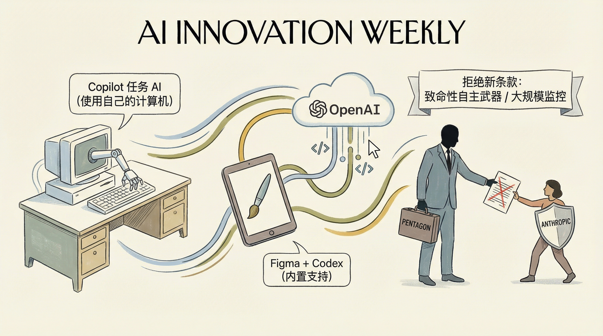

OpenAI承诺在加拿大强化安全措施，应对ChatGPT潜在风险。
两克伴AIGC日报
2026-02-27 星期五

本期关注：OpenAI强化加拿大安全措施并推Frontier企业平台，谷歌发布Nano Banana 2图像生成器，同时RunVeto推出AI代理终止开关、Shannon实现Claude Code团队协作，凸显AI治理与工具创新趋势。
📰 行业动态
Google发布AI图像生成器Nano Banana 2，增强现实编辑能力。
OpenAI推出企业级AI平台Frontier，与多家公司建立咨询联盟。
🔥 今日焦点
标题：Show HN: RunVeto – 简单的自主AI代理“终止开关”
RunVeto.xyz是由软件工程师JDPatel1729开发的一款简单治理工具，旨在为自主AI代理提供一个“终止开关”。随着AI技术的发展，自主AI代理的自主性日益增强，然而，这种自主性也带来了治理的挑战。JDPatel1729指出，当前AI代理缺乏足够的治理机制，导致诸如代理蔓延和递归等问题，这些问题不仅可能导致资源浪费，还可能引发严重后果。
Shannon，一款本地桌面应用程序，旨在为Claude Code代理团队提供高效的协调与协作平台。该应用旨在解决在使用Claude Code CLI处理大型项目时遇到的痛点，如工作分配、团队协作以及依赖关系管理。Shannon的核心功能包括：
1. **定制化代理创建**：用户可根据需求创建不同模型（Opus、Sonnet、Haiku）和系统提示的定制化代理，实现代码编写、代码审查、测试等不同任务的自动化。
标题：Show HN：Caddy插件实现AI爬虫付费访问网站功能
近日，一位开发者paolobietolini推出了一款Caddy中间件，该中间件通过实现Coinbase的x402协议，对AI爬虫访问网站内容进行收费。当GPTBot、ClaudeBot等已知AI爬虫访问网站时，将收到一个带有支付要求的HTTP 402响应。若爬虫支付（使用USDC在Base链上），则可获得内容；否则，将无法获取。
📚 深度长文
📄 重点论文
**核心贡献**: 提出了具有技能的AI代理的概念，这些代理能够执行多步骤推理工作流程，具有持久状态、工具访问和专门技能，代表了社会科学中自动化技术的质的飞跃。
**与AI Agent的关联**: 为AI代理的研究和应用提供了新的视角，特别是在社会科学领域，具有实际价值。
**核心贡献**: 提出了一种评估AI代理在AutoML管道中决策和结果的框架，强调了决策层面的评估，而非仅仅关注最终任务性能。
**与AI Agent的关联**: 为AI代理在AutoML领域的应用提供了评估标准，有助于提高代理决策的质量。
**核心贡献**: 引入了CourtGuard，一个检索增强的多智能体框架，将安全性评估重新构想为证据辩论，通过对抗辩论来评估LLM的安全性。
**与AI Agent的关联**: 为LLM的安全性评估提供了新的方法，对AI代理的安全性和可靠性研究有重要意义。
🛠️ 产品推荐
Show HN：一款基于TrueNAS服务器的AI沙箱产品。该产品通过WebSocket API将Incus容器部署至用户自建实验室，简化了容器启动和进入控制台的过程。内置了多种流行的代理CLI工具，用户可通过`devtools = true`快速配置。该产品旨在为开发者提供便捷的实验环境，降低实验成本，提高开发效率。
---
Httap是一款强大的终端级HTTP代理工具。它允许用户从终端或AI代理拦截、检查和重写HTTP流量。这款产品旨在帮助开发者和技术从业者更高效地管理和分析HTTP请求，从而优化网络应用性能，提升调试效率。Httap的AI能力体现在其智能代理功能，能够自动识别和解析HTTP请求，为用户提供便捷的调试体验。
---
ClawDaddy是一款基于Telegram的OpenClaw AI代理部署工具。通过简单的Telegram聊天，用户即可轻松设置和部署OpenClaw AI代理，无需繁琐的Node、Docker等配置。该产品简化了OpenClaw的部署过程，消除了复杂的设置和安全性问题，为用户节省了大量时间和精力。ClawDaddy采用独立服务器运行每个代理，确保数据安全和性能稳定。通过使用ClawDaddy，用户可以专注于AI策略开发，提高工作效率。